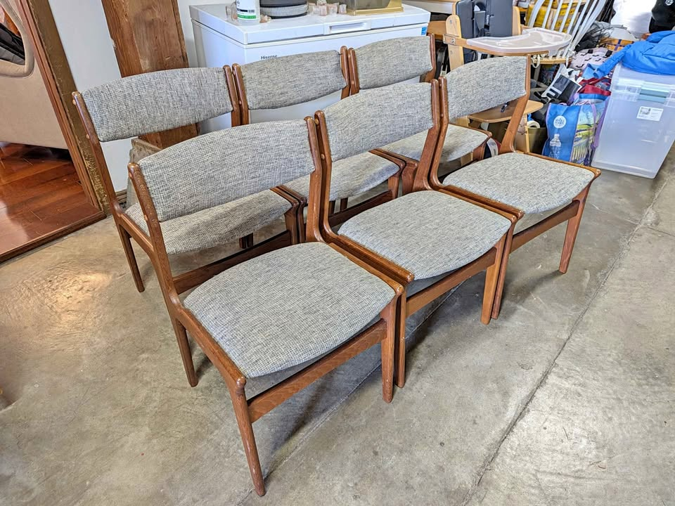

⚠ #11 — DEMOTED · 12 days live, length still unstated
Ansager Møbler Danish Teak Extendable Dining Table
$800
★★★★½4.5 / 5 value
A labelled and stamped Ansager Møbler — the priority Danish maker — for $800, photographed fully extended on four square tapered legs. The seller notes these fetch $4,000 restored. Still the cheapest stamped-Danish table on the board. It would be a flat 5/5 if the listing said how long it actually gets.
Re-verified live Wed Sep 9: Craigslist post is up, price unchanged at $800, seller updated it a day ago — and the body text still contains no dimensions of any kind. That is now day twelve. Per the board’s own rule this drops off the ranked picks until the open length is confirmed at ≥84″.
Maker/origin: Ansager Møbler — foil label reads "6823 Ansager · Made in Denmark", underside stamped 00944 3613 (priority maker) · San Rafael, CA (North Bay, ~35 min) · posted Aug 28 — 11 days up, live through Sep 27 · also cross-posted on Marketplace at the same $800
Size: still not stated after FB recheck tonight (and many days live) — two integrated pull-out extension leaves that store beneath the main tabletop; photographed fully open. The SF Ansager below states 53" → 93" for the same design, which remains the closest corroboration available — treat ~93" as inferred, not proven
Base: four square tapered legs — visually confirmed in both the closed and extended photos; no pedestal, no trestle, no stretcher · Condition: good — the seller states typical surface wear and prices accordingly · delivery available
⚠ Surface: pale leaves + "typical surface wear" — one refinish, ~$300–600. The driveway photo shows it fully open with the right-hand leaf clearly paler than the centre, and the seller concedes typical surface wear, pricing against the $4,000 restored figure. Solid teak, so the fix is safe and the $800 price absorbs it. The unresolved problem here is not the finish, it is that the seller still will not state the extended length. Ask for that before anything else.
✓ Clears the hard rules: solid Danish teak by a
stamped priority maker, matching-teak pull-out leaves that self-store (not metal), four tapered legs (not pedestal/trestle — visually confirmed in the driveway photo), in budget at $800, live on Craigslist and Marketplace. ⚠
The extended length is STILL unconfirmed after many days / FB recheck tonight — amber PENDING; treat the 84" floor as inferred. The top has real surface wear, so budget an oiling or light refinish.
Call, don't message, and ask for the open length first. FB:
Marketplace item.
How they compare in one line each — surface first:
eBay $750 — #1: 114″, Denmark, four legs, free local pickup; edge ding.
Berkeley Hornslet $800 — NEW #2: 117″, named maker, four tapered legs; top wear / richer leaves (refinish).
Hayward set $1,850 — cleanest top on the board, 96″, six clean chairs; $1,850 + tax.
Los Altos $850 — 106″, best provenance, relisted 2 days ago, video reviewed, and solid teak: the one confident $300–600 fix.
Hayward $800 — 92″ and Made in Denmark; veneered and hazy: a scuff-and-recoat project, not a wipe-down.
Walnut Creek $550 — 87″, leaves blend; "fair" scratches are graded and never photographed; narrowest top at 32¼″.
Redwood City Skovby $1,600 — 102½″ and six chairs, but shown only closed, and "walnut-toned" hints veneer.
Emeryville $950 — 94″, leaf tone looks right, but it has still never been photographed assembled.
SF Ansager $950 — flawless refinished top; the leaf mismatch survived that refinish, so treat it as permanent.
San Rafael $600 — 93″ at the dropped price; worn veneer. Not confidently repairable.
San Rafael Ansager $800 — demoted: day twelve, length still unstated.
The lesson of this run: the best table on the board was never on Craigslist or Facebook. Every listing on this page for four months came from those two channels, and both were scanned again today with nothing new to show for it. The 114″ Dane turned up on eBay, filtered to local pickup — one result out of thirty-one, because the other thirty were freight-only and would have been invisible without the filter. It has been sitting there, unbid, at a price no Bay Area Marketplace seller would leave on a table that long. The channel you are not searching is where the underpriced thing is.
That said, its being stale cuts both ways. Fresh + underpriced + Danish is the pattern that vanishes in three days (Petaluma, the Ansager XL); stale + underpriced usually means something in the photos is putting people off. Here that is probably the darker, redder tone and the disclosed edge ding. Neither is disqualifying — but ask for the underside stamp and a close-up of that edge before you drive, and use Best Offer.
The practical read this evening: eBay $750 remains the cheapest long call; Berkeley Hornslet $800 is the named-maker long call if you will refinish — longest labelled Dane on the board. Los Altos $850 is the safest long table if you want a photographed Danish mark. Hayward $1,850 is the one-trip solution if chairs matter more than provenance. The San Rafael Ansager is demoted until the seller states a length.
Checked this run (Wed Sep 9, evening PT — Craigslist deep-check + Facebook Marketplace re-verify + eBay #1 follow-up): NEW board add: Berkeley Hornslet Møbelfabrik $800 (62.5″→117″, four tapered legs, matching-wood pull-outs) — live; midday publish had missed it. eBay $750 / 114″ remains #1. Hayward $1,850, Los Altos $850, Hayward $800, San Rafael $600, Walnut Creek $550, Emeryville $950, SF Ansager $950 re-verified live on FB and/or CL. San Rafael Ansager $800: length still blank (stays demoted). Russian Hill Danish teak $1,995 (50″→94.5″, four legs) — ceiling KEEP, not yet carded. FB: Gangsø $850 SF still length-pending; BRDR Furbo $800 SF now states 59″ extended — hard DQ (matches prior Furbo game-table standing DQ). San Leandro refinished ~90″ $1,700 — soft keep / not Tier B. Redwood City Skovby $1,600 reconfirmed LIVE this evening on FB (55″→102.5″ + 6 chairs). Palo Alto $580 fake not seen. EstateSales.net: no new Danish extendable overnight; Oakland Skyline + Walnut Creek Grasons still Thursday-night photo previews.
Ruled out this pass / standing: Palo Alto $580 (vintage MCM teak table + 6 chairs) — pulled as fake / no-reply; Ray emailed the seller and got no answer; removed from the board entirely, not kept as a pick. Stanley $750 SF — American maker — DQ. Novato $1,750 — pedestal/trestle — DQ. BRDR Furbo $800 SF listed ~19h — prior standing DQ was Furbo game table at 59" max; flag as likely same DQ unless length confirmed ≥84"; not on the main board. Gangø $850 — length unstated; historically ~63" DQ — do not promote without length. Richmond teak-and-oak $915 — still no dimensions. San Jose "Monaco Walnut" $400 + 6 chairs — non-matching / water-damaged leaf; American. Dyrlund teak ($1,700, Hayward) — ceramic-tile inlay and a trestle base. Meredew butterfly-leaf teak ($1,450, SF), "Teak Dining Table One Butterfly Leaf" ($1,280, SF), McIntosh oval ($1,450, SF), SF butterfly-leaf teak ($1,680) — all U.K. imports. E. Valentinsen rosewood ($1,175, Walnut Creek) and Gudme Møbelfabrik rosewood ($700, SF) — twin-pedestal. Gudme Møbelfabrik ($550, Santa Rosa) — round on a pedestal. SF "Danish mid century modern extendable" ($700 and $725) — pedestal. SF "Modern danish teak oval" ($500) — dual-pedestal trestle. Vejle Stole Møbelfabrik ($1,995, SF) — priority maker but only 76" extended. Sonoma Skovby ($800) — twin cylindrical pedestal, peeling veneer. John Keal walnut ($975, Santa Rosa) — round on a slatted pedestal. Ansager Møbler square draw-leaf ($650, Walnut Creek) — only 67". SF "Teak Dining Table with Pull Out Leaves" ($1,695) — 83", one inch short. Roseville teak ($1,500) — no maker, no dimensions, ~2 hours out. Millbrae ($799) — 100" but arched trestle base. Los Gatos ($1,000) — 78". El Cerrito ($1,150) — two separate gate-leg tables. Fremont 1970s draw-leaf ($450) — made in Singapore. Albany draw-leaf ($1,000) — 67". Alameda ($1,250) — 72" max, laminated top. Modesto teak ($520) and Sacramento MCM teak ($680) — no dimensions / trestle, outside the drive radius. Benny Linden table ($1,290, Sacramento) — outside the radius. Stockton chevron-top sets ($1,250 and $1,255) — parquet tops, not Danish. Castlery "Seb" ($900, San Jose), West Elm ($200) and Crate & Barrel "Tate" ($1,000, Portola Valley) — current-production retail. Oakland oval ($1,750), Refinished Skovby ($2,950), San Jose "large conference" teak ($2,999), Sonora sunburst ($2,000, round), Børge Mogensen drop-leaf ($3,200), Stickley walnut ($3,500), Martinez ($180, too small), and SF tables at $2,200, $2,450, $2,500 and $2,800 — over or under spec. Heywood-Wakefield ($895) — American. Nathan, Remploy, G-Plan and other UK imports. New DQs this run: Hayward $3,350 teak set with 8 chairs (oval on a trestle-style base, and ~$2,150 table-alone after netting the chairs — over the ceiling); SF $2,500 two-draw-leaf tapered-top (U.K. import); SF $1,995 Danish teak rectangular (over ceiling, 2 leaves, no length stated); Mill Valley $1,500 McGuire pair; Livermore $1,250 oval tulip pedestal; Castro Valley $625 Hay Triangle Leg (current-production, not extendable); Orinda Design Within Reach Gather 73″ white oak (current production, not Danish).
Gone in the last 30 days
Palo Alto — Vintage MCM teak table + 6 chairs, $580 · pulled Sep 8 (yesterday). Held #1 on this board for two days at the best price-per-seat the search ever found. Ray emailed the seller and got no reply; treated as unresponsive/fake and removed entirely. Standing ban — do not re-promote if it reappears.
Petaluma — Made-in-Denmark draw-leaf, $1,200 · gone ~mid-August, after 3 days live. 90½″, four tapered legs, photographed extended. The archetype of the Tier-A pattern: Danish, dimensioned, under $1,300, and unavailable inside a week.
San Francisco — Ansager Møbler XL, $1,700 · deleted by its author, ~mid-August. 112″ × 48″ — until today, the largest table this search ever found. The new eBay pick at 114″ finally beats it, and for $950 less.
Oakland — Skovby cherry oval, $1,200 · marked out of stock, ~late August. 110″ from a priority Danish workshop.
Berkeley — Sun Furniture Danish-style teak chairs, set of 6, $750 and Richmond — D-Scan teak, set of 8, $1,000 · both sold in August. The only two standalone sets of six-or-more besides Sausalito until today's $900 SF set appeared.
The pattern, four months in: anything Danish, with its dimensions stated, under $1,300, on Craigslist or Marketplace, clears in under a week — which is exactly why a 114″ Dane at $750 sitting unsold on eBay is worth a phone call rather than a shrug. It is not that nobody wants it; it is that almost nobody is looking there.
Watchlist: the Gudme Møbelfabrik walnut expandable, $2,050 (Folsom — priority maker, 63¼" → 101½", original table pads, delivery included, $50 over the ceiling) sits outside the 40-mile Marketplace radius and the SF Bay Craigslist region, so it still cannot be re-verified from here. Its listing ran to roughly Sep 11, so it is probably gone by now — and with a 114″ Dane at $750 and a 106″ Danish Control at $850 both on the board, a $2,050 walnut two hours away has stopped mattering. Closing this watchlist entry unless Ray asks to keep it.
⚡ Chairs — quick read
- 🪑 NEW — a second standalone set of six: $900, San Francisco, listed an hour ago. Scandinavian/Danish-style frames with tapered legs, professionally reupholstered about five years ago in a neutral grey weave. $150 a chair. The catch: no maker's marks at all (the seller was given them by a Dutch friend), and two of the six have loose backrests — screws under the wooden peg covers, sold as-is.
- 🌟 Sausalito's seven teak chairs at $250 are still #1 — ~$36 a chair, Benny Linden, re-verified live today. The new SF set costs four times as much per seat, so Sausalito keeps the top slot; the SF set is the answer only if you want six that match a darker table and are willing to pay for done upholstery.
- 🏆 Table picks that already include seating: Hayward $1,850 (+6 clean Benny Linden), Redwood City Skovby $1,600 (+6, stained). The new eBay $750 is table-only — it pairs naturally with Sausalito's seven.
- ⚠ The four Danish teak chairs in SF, $600, are still carried — same Mission-District seller as the SF Ansager, so table and chairs would be one pickup. Four seats only.
- 💭 Still no standalone set of eight. Seven-plus-one, or seven around a long table, remains the realistic route — and at 114″ the new #1 table would seat all seven comfortably with room to spare.
Budget $1,200–$2,400 for six · MCM teak/walnut that coordinates with the table · easy, clean fabric · driveable / delivers
Chairs · sets of 6+ · in budget

🪑 NEW today · a second set of six · upholstery already done
Set of 6 Vintage Mid-Century Modern Dining Chairs — Scandinavian/Danish Style
$900 (set of 6 — $150/chair)
★★★½3.5 / 5 value
The first credible alternative to Sausalito in weeks: six matching chairs, already professionally reupholstered, in a neutral grey that will sit against any of the teak tables on the other tab. What holds it to three and a half stars is arithmetic and provenance — $150 a chair is four times Sausalito's price, there are no maker's marks of any kind, and two of the six need their backrests tightened.
Maker/origin: Scandinavian/Danish style — no manufacturer markings or labels; the seller was given them by a Dutch friend over ten years ago and does not know the maker · San Francisco, CA · listed today, opened live this run
Count/fabric: 6 chairs · warm wood frames, tapered legs, upholstered seats and backs · professionally reupholstered ~5 years ago in a neutral textured grey
Condition: used – good; scratches, scuffs and normal wear to the wood consistent with age · two of the six have loose backrests — attached by screws beneath the wooden peg covers, not repaired, sold as-is
✓ Six matching chairs, upholstery already done in a colour you would have chosen anyway, and listed today rather than sitting for weeks — so this is the one to call on if you want the seating question closed in a single trip. ⚠ Three reservations: $150/chair against Sausalito's $36; no maker, no label, no provenance, so it will never match a Skovby or Ansager table on that front; and two loose backrests — a screwdriver job in all likelihood, but confirm the screws bite into sound wood and are not stripped. Upholstered backs also mean twice the fabric to live with if you ever change your mind.
View listing →

🌟 best price per seat · seven chairs, ~$36 each
7 Benny Linden Teak Dining Chairs — Set of 7
$250 (set of 7)
★★★★½4.5 / 5 value
Seven teak chairs for $250 — ~$36 a chair — with tall sculptural spindle backs, tapered legs and plain cushioned seats. The cheapest seating this search has found by a factor of three, the only set above six, and — until today’s $900 SF set — the only standalone set on the board. The single reason it isn't 5/5 is that Benny Linden is Danish-modern style, not a Danish workshop.
Maker/origin: Benny Linden — Danish-modern style, teak; not Danish-made · Sausalito, CA (North Bay, ~25 min) · opened live this run, unchanged · public meetup or door dropoff
Count/fabric: 7 chairs (side chairs) · tall vertical-spindle backs, rounded rails, tapered legs · pale neutral cushioned seats
Condition: used – good; the seller describes warm teak tones and clean lines; the listing carries nine photos, so check that all seven match before you go
✓ Best price per seat on the board by a wide margin, warm teak that will sit happily next to any of the teak table picks, and seven chairs — one short of the room rather than two. ⚠ Two caveats: not a Danish maker, so it won't match a Skovby or Ansager on provenance; and seven is an odd number — plan either to find a matching eighth (the Hayward set's six are the same brand) or to run seven around a 92" table. At $36 a chair, with nothing else standing, go look this week.
View listing →
Chairs · partial sets worth a look

four chairs · zero work · same seller as the SF Ansager
Four Danish Modern Teak Dining Chairs
$600 (set of 4 — $150/chair)
★★★½3.5 / 5 value
Solid old-growth teak, cleaned, oiled and newly reupholstered in green wool — like-new, nothing to do. Four stars' worth of quality at a three-star count: $150 a chair for four is four times Sausalito's price per seat, and four chairs do not furnish a table that seats eight.
Maker/origin: Danish Modern solid teak (unbranded) · SF Mission District (~35 min) — same seller as the SF Ansager table, so one-stop pickup · posted May 21, opened live on Craigslist this run
Count/fabric: 4 side chairs · newly reupholstered in modern green wool · hand-rubbed teak oil finish
Size: ~18" × 18" × 33" high · 18" seat height · Condition: like new; frames solid, strong and sturdy · SF delivery $50, Bay Area $60+
✓ Genuinely Danish-modern solid teak, excellent condition, no upholstery work needed, and free pickup logistics if you take the SF Ansager table in the same trip. ⚠ Only four chairs — below the set-of-six bar, so this is a component, not a solution. It would pair with Sausalito's seven only in a deliberately mixed room, and the green wool is a colour you'd be inheriting. Ask this seller whether more of the set exists before driving.
View listing →
The trade-off in one line: Sausalito, $250 still buys seven teak chairs for less than the cost of recovering any six — the obvious first call, with the caveat that they are Danish in style only and there are seven, not eight. The new SF $900 set is the opposite trade: six matching chairs with the upholstery already done and paid for, at four times the price per seat and with no maker at all. Everything else means buying a table that comes with chairs: Hayward $1,850 (six, clean Benny Linden) or Redwood City Skovby $1,600 (six, stained — budget $200–300 to recover). Palo Alto $580 (+6) was pulled as fake/no-reply.
Seen but set aside: Mid-1960s D-Scan teak, 3 chairs ($300, Novato) — only three, fair condition, needs refinishing and reupholstery, Singapore-made. Set of 4 Vintage Danish Teak Windsor-style ($275, cut from $1,100, ships to you) — four only, and Windsor spindle-back rather than Danish-modern. Set of 6 Danish-style teak by Sun Furniture ($750, Berkeley) — sold. Six Danish Modern teak, reupholstered purple ($1,000, SF) — deleted. Four Henning Kjærnulf for Vejle Stole Møbelfabrik, 1960s ($900, Richmond) — a priority Danish maker, but only four chairs at $225 each. Set of 8 D-Scan teak ($1,000, Richmond) — sold. Four D-Scan teak chairs ($600, Santa Rosa) — gone. Set of 8 Danish teak, free delivery ($1,600, San Rafael) — sold. Set of 6 D-Scan teak ($1,200, Novato) — pricier per chair. Six H.W. Klein for Bramin, refinished ($2,795, Richmond), Johannes Andersen teak 6 ($2,650) and six vintage MCM Danish teak ($1,700, SF) — over the ceiling or over $250 a chair. Nathan teak 6 ($1,280, SF) — UK import. Sunnyvale MCM arm chairs ($400) — grey tweed, not teak-toned. A floral-upholstered 6 ($2,400) — busy fabric.